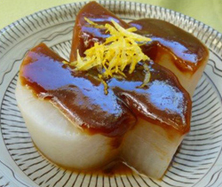

ふろふき大根
- 調理時間：40 分
- （一人当たり）
- カロリー：227kcal
- たんぱく質：5.6g
- 脂質：2.8g
- 塩分：2.7g


＜２人分＞
- 大根
- 1/3本
- 昆布
- 10㎝×10㎝
程度 - ゆずの皮
- お好みで
田楽みそ（赤）Ａ
- ・赤味噌
- 50g
- ・砂糖
- 大さじ3
- ・酒
- 大さじ1
- ・みりん
- 大さじ2
- ・だし汁
- 大さじ2


- 大根は高さを揃えて切り、厚めに皮をむく。裏面に十文字に隠し包丁を入れる。
- 鍋に昆布と大根、大根がかぶるくらいの水を入れて火にかける。３０分くらい炊き、竹串がすっと通るくらいまで火をいれる。
- 鍋に田楽みそＡの材料を入れ、よく混ぜて味噌を溶かしてから火にかけ練り上げる。
- 大根が炊きあがったら、田楽みそをたっぷりのせて、お好みでゆずの皮を散らす。
ふろふき大根
立冬も過ぎ益々寒さが増す今日この頃。この時期は、寒さ対策として体をあたためる食事が必要です。そこでおすすめの食材は旬の大根。
土のミネラルを十分に吸収した根菜類をじっくりと煮込んで食べる調理法は冬にぴったりです。味噌や葛などの調味料をつかえば温める効果はパワーアップします。体を冷やさない食べ方は免疫力を下げず、次の季節の生命力を蓄える力となります。
大根の根の部分は、ビタミンＣや消化を助けるジアスターゼなどの酵素が豊富。それぞれの部位ごとに味、栄養素が異なりますから、まるごと１本食べきれるよう、お料理のレパートリーを広げましょう。